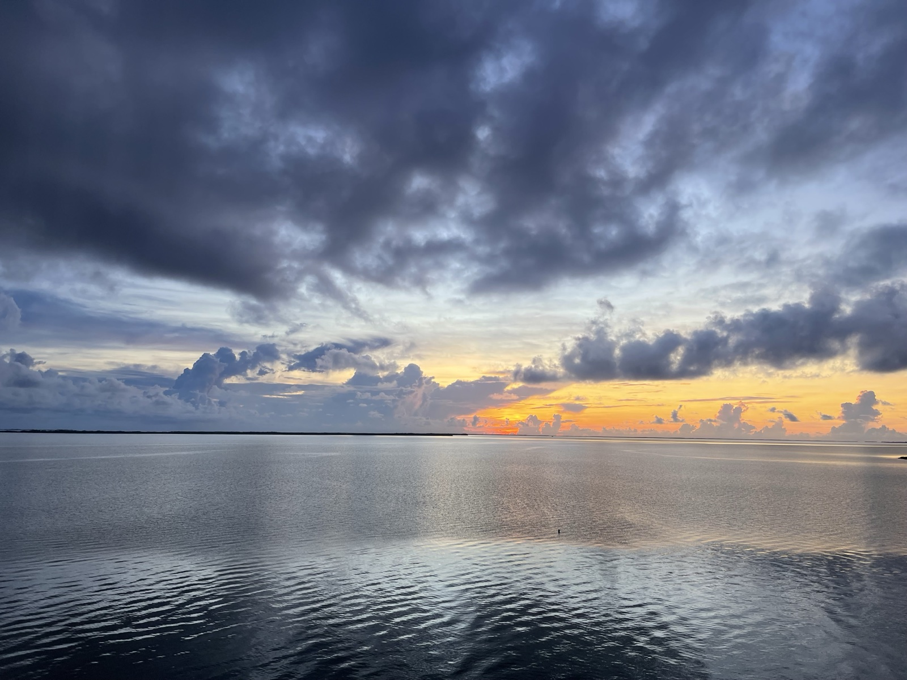
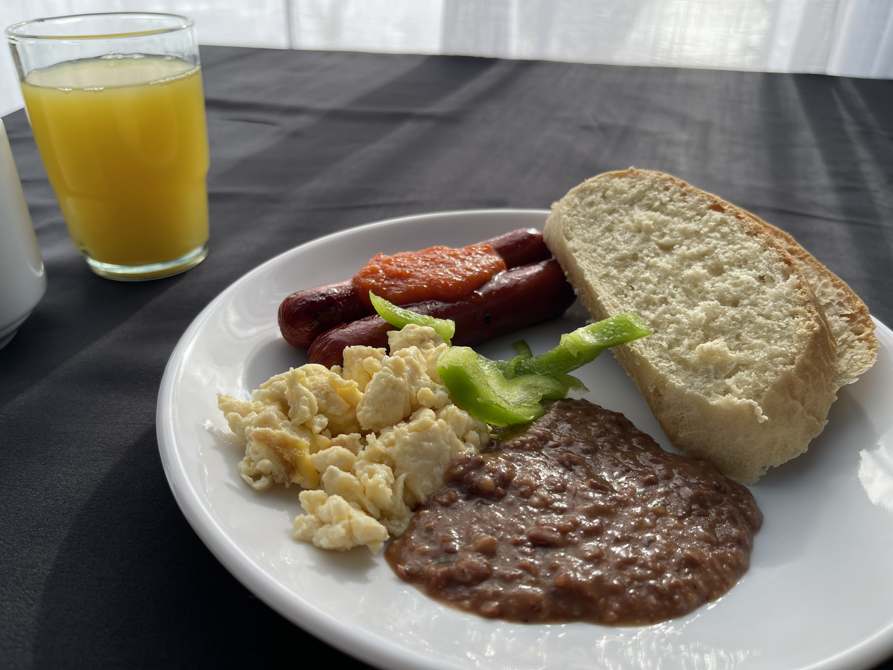
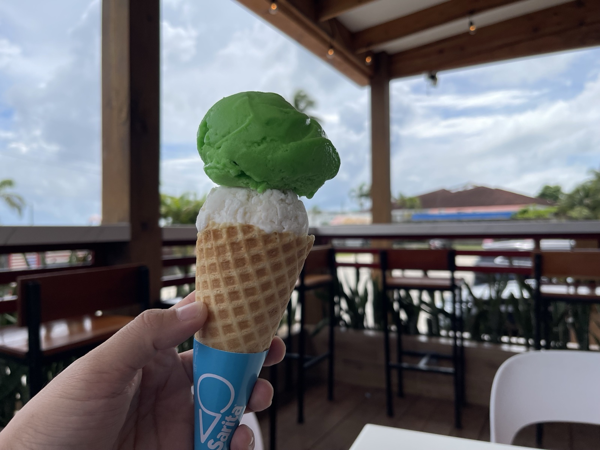
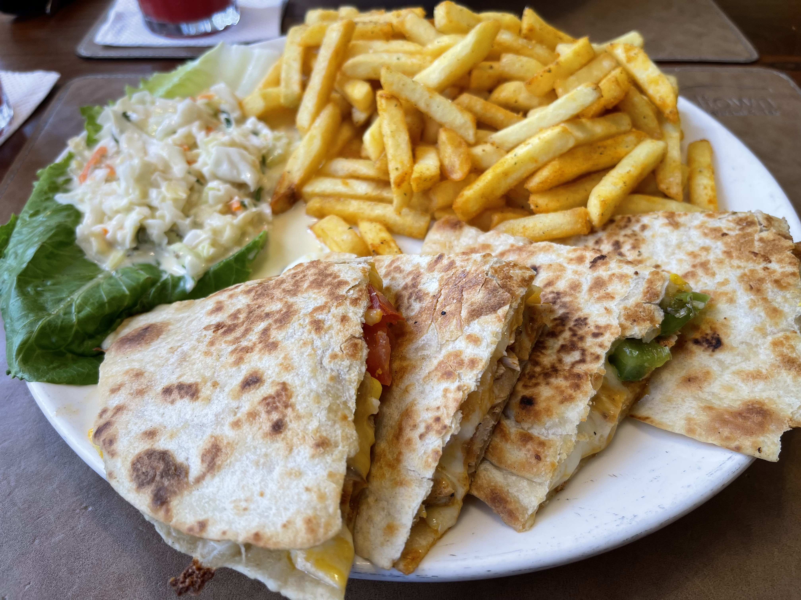
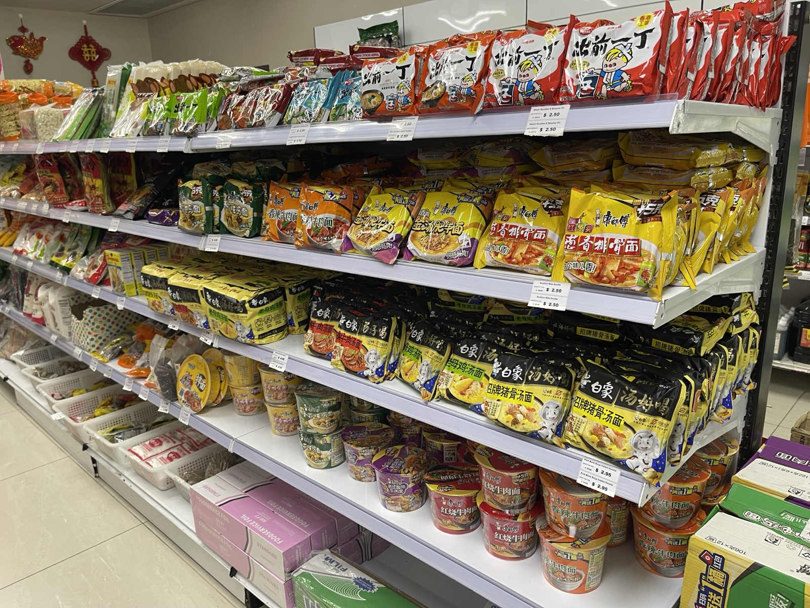
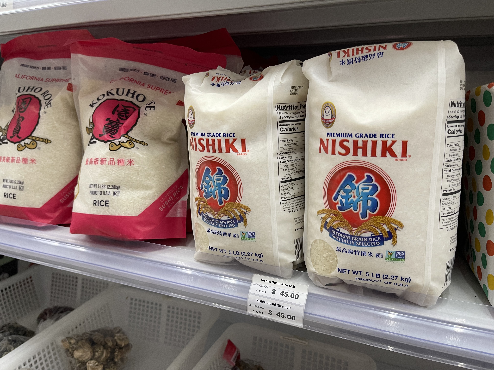
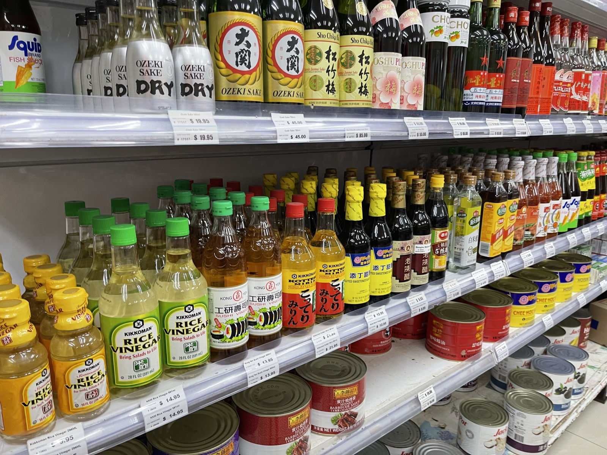

Tras el cielo azul y seco de Chile, lo que aterrizó en mi piel fue aire tropical húmedo y pegajoso. Belice — un país centroamericano poco común que usa inglés como idioma oficial. Aunque está en la misma Centroamérica que Costa Rica o Nicaragua, su historia como antigua Honduras Británica le dio una cultura muy distinta a la de sus vecinos.
Aterricé en Belize City: la ciudad más grande del país, aunque no es la capital (la capital es Belmopán, en el interior). Es un puerto frente al Caribe y la puerta de entrada a la Patrimonio de la Humanidad Barrera de Coral de Belice.
El Caribe al amanecer

Madrugué para ir al mar. El cielo se ponía anaranjado y el Caribe reflejaba el mismo color. Un paisaje muy distinto del cielo seco y azul de Chile — humedad y luz tropical. El oleaje era suave y a lo lejos se veían siluetas de islas. Esto no se ve si no madrugas.
Desayuno y comida callejera

El desayuno belizeño se basa en frijoles y huevos. Frijoles negros bien cocidos, plátano (de cocinar) frito y tortillas. Las especias dan el toque justo para una mañana tropical.


Por la tarde fui a "Sarita", una heladería local. Pedí dos bolas, una de lima y una de mango. Calor tropical con la acidez fresca de los cítricos. Belice habla inglés, pero el español también funciona mucho. Que me pudieran atender en español fue un respiro.
"Japón" encontrado en supermercados chinos
Lo que me sorprendió en Belize City fue la cantidad de supermercados regenteados por personas chinas. En la zona comercial hay varios con carteles tipo "Asian Grocery", y al entrar, junto a productos chinos, aparecían productos japoneses.



Arroz Nishiki (arroz japónica producido en EE. UU.) a $45. Caro para Centroamérica, pero seguramente hay demanda. Sake, salsa de soya, fideos instantáneos… una estantería que cuenta que en Belice hay comunidad asiática.
La población de Belice es en su mayoría garífuna, criolla, maya y mestiza, con una presencia china significativa desde hace tiempo. Esa mezcla en la comida tiene este tipo de trasfondo.
Guía de viaje (información general)
※ Esta sección reúne información pública con notas del autor; consulta los datos más recientes de entrada, seguridad y horarios en los sitios oficiales.
Entrar a Belice: lo básico
- Idioma oficial: inglés. Belice es el único país independiente de Centroamérica con el inglés como idioma oficial; también se hablan ampliamente español, criollo y garífuna.
- Moneda: dólar beliceño (BZD), con tipo de cambio fijo 1 USD = 2 BZD. El dólar estadounidense se acepta casi en todas partes.
- A 2025, las personas con pasaporte japonés no requieren visa para estancias turísticas de hasta 30 días. En migración pueden pedir billete de salida y comprobante de alojamiento.
Seguridad y movilidad en Belize City
- El advisory del MAEC (referencia del MOFA japonés) clasifica partes del centro de Belize City (zonas norte y sur) en "Nivel 1: precaución" (datos de 2025). Evita caminar de noche.
- Para moverte usa taxis con licencia (placas verdes). Los apps de ride-share como Uber aún no operan ahí.
- El Aeropuerto Internacional Philip Goldson (BZE) queda a unos 16 km al noroeste del centro; 20–30 min en coche.
Pistas de comida y cultura
- Desayuno típico: Fry Jacks (pan frito esponjoso) con frijoles, huevo y plátano macho. Cuesta entre 5 y 10 BZD en puestos y comedores.
- Belice es un país multiétnico donde conviven garífunas, criollos, mayas, mestizos y comunidades chinas. La superposición culinaria es seña de identidad.
- El agua del grifo no se recomienda para beber. Lo común es agua mineral embotellada (Crystal y otras).